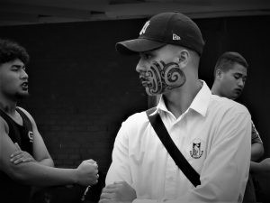
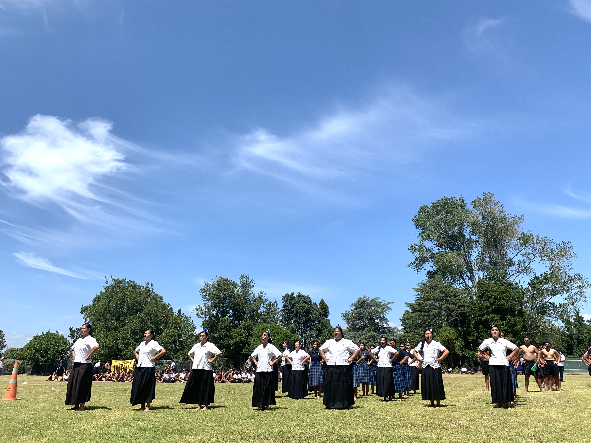
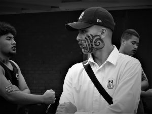
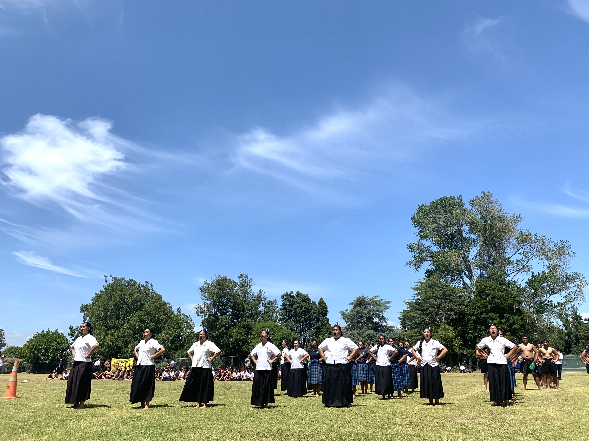

haka
Haka can be said to form a particularly large subclass of waiata. In 1975 Arapeta Marukitipua Awatere explored the features of different types of haka and their uses. He noted, ‘Each class and sub-class has its own convention: its own style of actions, postures, accoutrements, and presentations, and fulfils a social function in a social situation, be that situation physically actual and factual or be it, in the mytho-poetic mind, there and then, an imagined, symbolic one.’1 Awatere gave a list of five haka types distinguished according to function:
haka taparahi
a ceremonial dance performed without weapons tūtūngārahu (also known as ngārahu, whakatūtū-waewae and whakarewarewa) – a divinatory dance performed by a war party with weapons, before elders and experienced warriors who judged from their performance whether they were ready to go into battle.
ngeri
an exhortation to rouse a group to achieve its objective, performed without weapons.
peruperu
the true war dance, performed with weapons when the warriors come face to face with the enemy in battle.
puha
a kind of peruperu, which can be used to alarm and call kinsmen to arms, not on the actual battlefield but in their pā and homes (whereas the peruperu is used only in battle).